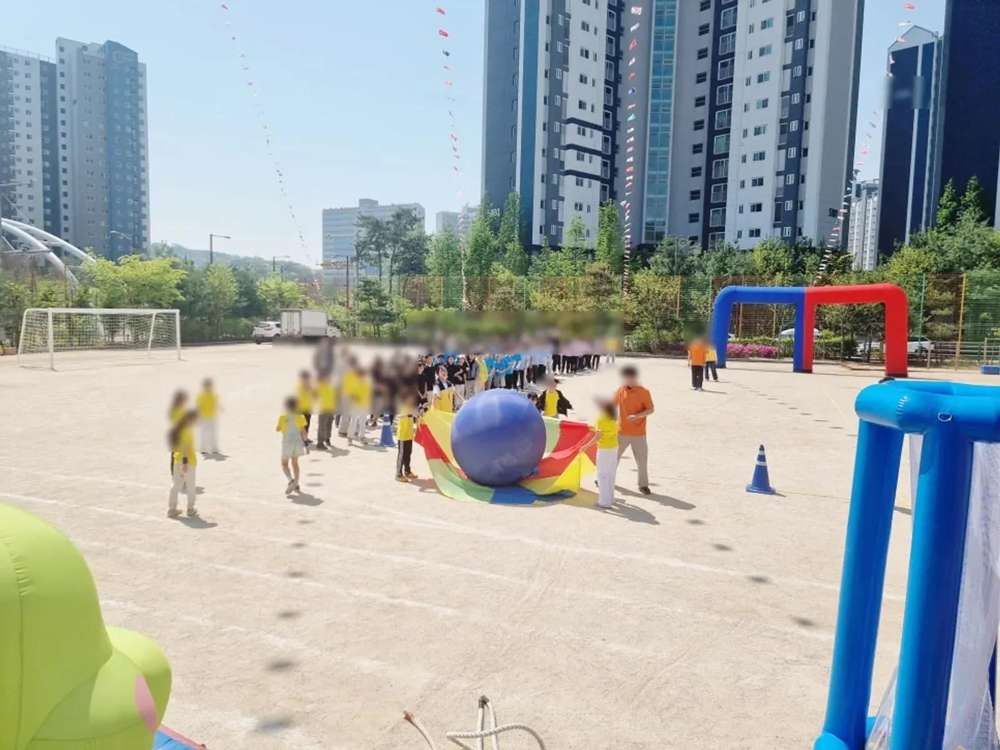
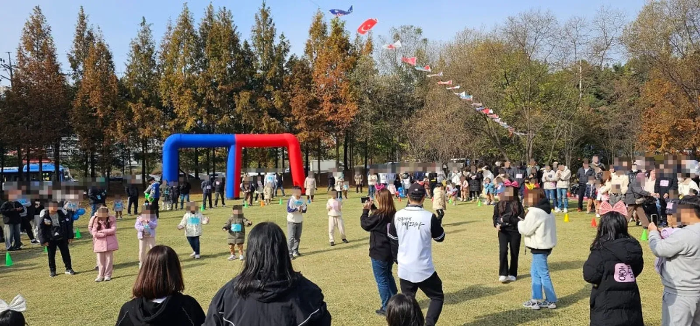
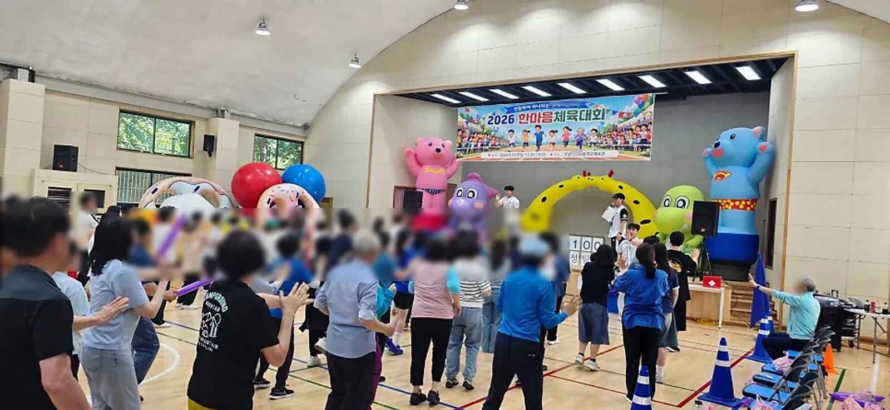

중랑 초등학교 운동회는 학년별로 할 수 있는 경기와 운동장이 감당할 수 있는 인원을 먼저 맞추는 것이 출발점입니다. 1학년과 6학년은 체력도 규칙 이해도 달라, 같은 경기를 돌리면 한쪽이 소외됩니다. 준비운동부터 학년별 프로그램, 단체게임, 부모님 경기까지 시간에 맞춰 자연스럽게 이어지게 짜야 합니다. 예그리나는 남양주 별내 사무실에서 중랑구청까지 차로 약 20분 · 14.5km 거리입니다.

- 초등학교 운동회는 준비운동 → 학년별 프로그램 → 단체게임 → 부모님 경기 순서로 짜면 흐름이 자연스럽습니다.
- 저학년과 고학년 경기는 운동장 구역을 나눠 동시에 돌리면 기다리는 시간이 줄어듭니다.
- 학교마다 운동장 환경 · 참여 인원 · 실내/실외/우천 상황 · 예산이 달라 프로그램도 학교에 맞춰야 합니다.
- 학년이 바뀔 때 대기 · 입장 동선을 미리 그려 두면 경기 사이 빈 시간이 줄어듭니다.
- 중랑구청까지는 예그리나 사무실에서 차로 약 20분(막히지 않을 때)입니다.
1. 중랑 초등학교 운동회, 학년별 경기 나누기
초등학교 운동회의 큰 흐름은 준비운동, 학년별 프로그램, 단체게임, 부모님 경기입니다. 이 안에서 학년별 프로그램을 어떻게 나누느냐가 운동회 전체의 질을 좌우합니다.
| 학년 | 어울리는 경기 | 주의할 점 |
|---|---|---|
| 1 · 2학년 | 규칙이 짧은 공 옮기기 · 줄 서서 하는 경기 | 설명은 짧게, 시범을 먼저 |
| 3 · 4학년 | 팀 이어달리기 · 협동 경기 | 팀 구분을 눈에 띄게 |
| 5 · 6학년 | 힘과 전략이 필요한 단체 경기 | 승부가 과열되지 않게 규칙을 분명히 |
| 전교생 | 큰 공 굴리기 · 단체 경기 | 구역과 순서를 미리 연습 |
2. 운동장 동선 — 경기장 · 대기 · 응원석
운동장이 넓어도 동선을 정하지 않으면 다음 학년이 경기장으로 들어오는 사이 시간이 새어 나갑니다. 경기장, 다음 순서 대기 자리, 반별 응원석, 학부모 관람 자리를 그림 한 장에 그려 보세요.
- 경기장 — 운동장 가운데. 트랙과 경기 구역을 콘으로 표시합니다.
- 대기 자리 — 경기장 입구 바로 옆. 다음 학년이 미리 줄을 섭니다.
- 응원석 — 반별로 자리를 정하고 천막으로 그늘을 만듭니다.
- 학부모 자리 — 경기장과 응원석 사이에 섞이지 않게 바깥쪽에 둡니다.
- 놀이 공간 — 에어바운스를 둔다면 경기장과 떨어진 곳에 둡니다.

3. 학교마다 다른 조건 맞추기
소규모 학교와 전교생이 많은 학교는 같은 운동회라도 전혀 다르게 짜야 합니다. 예그리나는 운동장 환경과 참여 인원, 실내 · 실외 · 우천 상황과 예산을 함께 보고 학교마다 프로그램을 맞춥니다. 이 내용은 초등학교 운동회 기록에도 정리돼 있습니다.
| 조건 | 상담에서 알려 주실 것 |
|---|---|
| 운동장 | 흙 · 인조잔디 여부, 트랙 크기 |
| 인원 | 학년별 학생 수, 학부모 참관 여부 |
| 실내 대안 | 체육관 · 강당 사용 가능 여부 |
| 시간 | 시작 · 종료 시각, 점심 포함 여부 |
| 학교 일정 | 같은 주의 다른 행사, 수업 시간 |

4. 학부모 경기와 안전
부모님 경기는 운동회의 하이라이트이지만, 어른이 전력으로 달리다 넘어지는 일이 생기기 쉽습니다. 경기 종류는 달리기보다 협동형으로 고르고, 바닥 상태를 미리 살핍니다.
- 운동장 돌 · 패인 곳은 전날이나 당일 아침에 학교와 함께 확인합니다.
- 경기 중 응원석 아이들이 트랙으로 나오지 않도록 선생님이 구역을 지킵니다.
- 보건실 위치와 담당 선생님을 진행팀과 공유합니다.
- 더운 날에는 학년 사이 쉬는 시간을 늘리고 물 마시는 시간을 안내합니다.
예그리나는 안전을 가장 먼저 두고 진행하며, 시상과 정리까지 마칩니다. 학교에서 따로 정한 안전 수칙이 있다면 상담 때 함께 보내 주세요.
5. 중랑에서 운동회 견적 문의할 때
중랑구(서울)는 예그리나 별내 사무실에서 중랑구청까지 차로 약 20분 · 14.5km(막히지 않을 때)입니다. 학교가 구 안 어디든(면목동 · 상봉동 · 중화동 · 묵동 · 망우동 · 신내동 등) 당일 일찍 도착해 장비 자리를 잡고 세팅합니다. 중랑 안내는 중랑구 행사 안내에 있습니다.
| 항목 | 함께 알려 주실 것 |
|---|---|
| 초등학교 운동회 | 학년 수 · 전교생 수 · 운동장 또는 체육관 |
| 운동회 게임도구 | 꼭 넣고 싶은 경기 |
| 체육용품 · 만국기 | 운동장 크기 |
| 천막 · 의자 | 응원석 · 내빈석 수 |
| 진행 사회자 | 개회식 · 시상식 진행 여부 |
운동회 · 체육대회는 최소 6개월 전부터 문의해 주시면 원하는 날짜를 잡기 쉽습니다. 자동 견적서에서 항목을 골라 보내 주세요. 자동 견적서는 금액을 보여 주지 않으며, 비용은 상담 후 안내합니다.
자주 묻는 질문
전교생이 많아도 하루에 진행할 수 있나요?
학년별 경기를 구역을 나눠 동시에 돌리면 진행할 수 있습니다. 학생 수와 운동장 크기를 알려 주시면 시간표를 함께 짭니다.
비가 오면 운동회를 어떻게 하나요?
체육관이나 강당을 쓸 수 있으면 실내로 옮겨 진행할 수 있습니다. 결정 시점은 상담에서 정합니다.
학교에서 준비할 것은 무엇인가요?
학년별 명단, 팀 구분, 시상 방법, 보건 담당과 학부모 공지는 학교에서 정해 주세요. 프로그램과 게임도구, 진행은 상담에서 정한 대로 준비합니다.
운동회 순서표는 언제 받아 볼 수 있나요?
학교의 조건을 듣고 상담하면서 순서표를 함께 다듬습니다. 학년별 학생 수와 운동장 조건을 먼저 보내 주시면 빨라집니다.